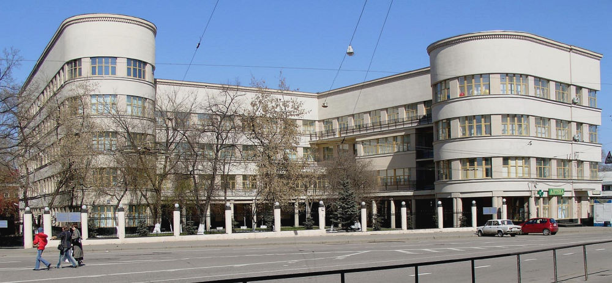

Architektura konstruktywizmu zawiera się w formule stylu modernistycznego i rozwijała się głównie w latach 20. i 30. XX wieku. Podkreślano w nim, jak sama nazwa wskazuje, cechy konstrukcyjne obiektu – jego logiczne zastosowanie oraz uwypuklenie struktur konstrukcyjnych. Konstruktywizm miał na celu pogodzić interesy inżynierów budowlanych z klasyczną architekturą.
Hala widowiskowo-sportowa Arena w Poznaniu, J. Turzeniecki
Od początku XIX wieku obiekty o cechach konstruktywistycznych powstawały w związku z nowymi zadaniami, przed jakimi stanęła architektura, przede wszystkim w ramach budownictwa przemysłowego i komunikacyjnego. W tym czasie większość architektów nie zajmowała się konstrukcją, pozostawiając to zadanie nowo powstałemu zawodowi inżyniera budownictwa.
W budynkacj konstryktywistycznych często stosowane były wyszukane układy konstrukcyjne. Używano cięgien i kratownic. Konstruktywizm cechował się analizą właściwości użytych materiałów i zastosowanych układów konstrukcyjnych przez stosowanie obliczeń podpartych osiągnięciami współczesnej nauki. Zastosowana forma architektoniczna była związana z własnościami stosowanego materiału (stal, żelbet, drewno, szkło). Nierzadko kształt budynku pochodził z przeniesienia wykresu momentów zginających na realną konstrukcję, tak aby przekroje elementów konstrukcyjnych i ilość zastosowanego materiału były najmniejsze, a jednocześnie podkreślały umiejętności inżynierskie i kunszt budowlany.
Najpopularniejsi architekci :
Chcesz dowiedzieć się więcej o konstryktywizmie? Sprawdź Wikipedię, klikając tutaj.
Poznaj więcej budynków charakterystycznych dla konstryktywizmu:
|
 MPS Building, Moskwa, Ivan Fomin |
Szpital Bezručova, lois Balán & Jiří Grossmann |